Canales
Grabación en Stereo
La mayoria de los microfonos comunes
solamente pueden grabar en un solo canal (mono). Por esta razón, no es
útil el intentar grabar ese sonido en una grabación estéreo, ya que no
se ganará ningún nuevo detalle del audio y, al reproducirse, el audio
sonará exactamente igual que una grabación mono. Dicho esto, hay
micrófonos disponibles que sí hacen grabaciones en dos canales. Si
tienes uno de estos, puedes ajustar el número de canales a grabarse
dentro del menú Editar -> Preferencias -> Equipos, para el equipo
específico que soporte grabaciones con canales múltiples.
Cómo mezclar varias fuentes de audio
En vez de tener un sólo
equipo capaz de hacer grabackiones estéreo, es más común tener
multiples equipos grabando sonidos distintos simultáneamente. Un
ejemplo puede ser una programma de radio o televisión en el cual el
anfitrión tiene un canal de audio y cada invitado tiene su propio canal
de audio también. Otro ejemplo puede ser una grabación de una banda de
música tocando en vivo, en la cual cada músico o instrumento tiene su
propio canal de audio. Hay maneras de hacer estas grabaciones en
Audacity (con la ayuda del programa de routing de audio JACK en Linux),
pero no las vamos a estuidar en este curso.
Al contrario, vamos a comenzar con un escenario en el que hay
varias pistas de audio independientes que ya se han grabado
previamente, y necesitan ser editadas para que formen un sólo proyecto
de audio.
Hay una pista para cada persona que habla en esta grabación, y las
puedes descargar aquí
y aquí. La siguiente es
una transcripción del audio:
M: Hola
H: Hola
M: ¿Como estas?
H: Estoy bien, ¿y tu?
M: Estoy bien tambien. ¿Que haces ahorita?
H: Estoy leyendo un libro. ¿Por que?
M: ¿Quieres ir al parque zoologico con migo?
H: Si, que divertido.
Una vez tengas la primera pista abierta en Audacity, abre la
segunda seleccionando Archivo -> Importar -> Audio... y
seleccionando la segunda pista en tu disco duro. Ahora que las dos
están en el proyecto, intenta reproducir el sonido haciendo clic en el
botón de Reproducir.
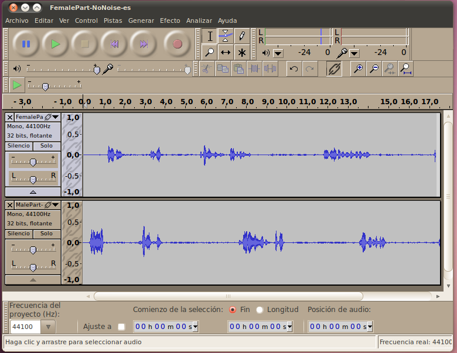
Te
darás cuenta de que el audio no está alineado: los dos personajes están
hablando uno sobre el otro. Esta es una ocurrencia común al hacer
grabaciones con múltiples canales, ya que cada pista no necesariamente
comenzó su grabacion en el mismo momento. Para resolver esto tendremos
que sincronizar (sync) las pistas manualmente. Pero antes de hacer
esto, pongámosle nombre a cada pista para poder mantenerlas a la vista
(sto será aún más importante cuando tengas muchas pistas). Para hacer
esto, haz clic en la flecha que indica hacia abajo en la esquina
superior izquierda de la pista, y selecciona la opción de Nombre...
Para la pista de la mujer, llámala "Mujer", y para el hombre, llámala
"Hombre".
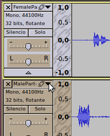
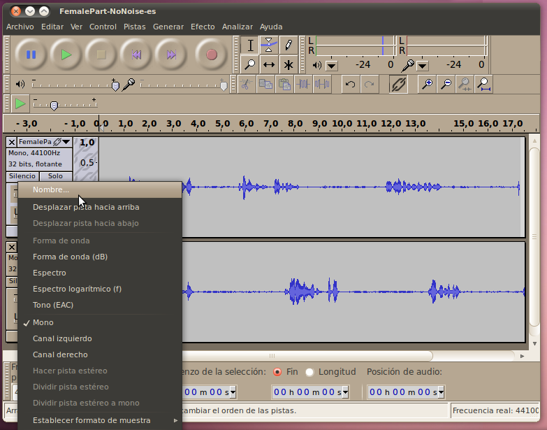
Hecho
esto, es una buena oportunidad ahora para guardar el projecto de
audacity en el disco duro en formato .aup con su respectivo directorio.
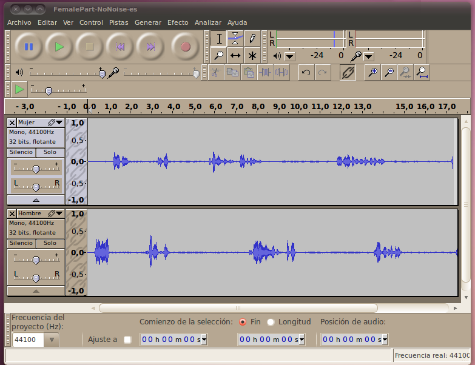
Herramienta de Desplazamiento
Ahora estamos listos para
sincronizar el audio de manera que el resultado final tenga a los dos
personajes hablando entre ellos al tiempo correcto. Selecciona la
Herramienta de Desplazamiento en el Tiempo que está justo debajo y a la
derecha de la Herramienta de Selección.
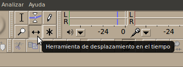
Luego, será tan simple como hacer clic en la pista que quieres
move, y arrastarla hasta el lugar indicado. En este caso, movamos la
pista del Hombre (porque la mujer habla primero). Simplemente mueve la
pista para que en la gráfica de forma de onda, la primera respuesta del
hombre se alínee con el espacio entre la primera y la segunda respuesta
de la mujer.
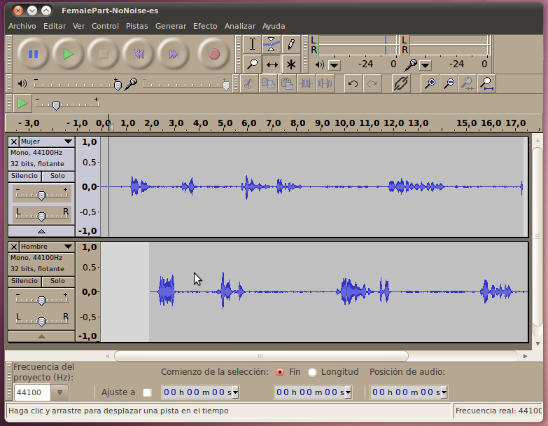
Si intentas reproducir el sonido ahora, te darás cuenta de que el
sonido comienza alineado, pero luego pierde orden a lo largo de la
grabación. Hay varias razones posibles para esto, pero en este caso es
porque estas pistas fueron tomadas en dos intentos diferentes, con la
voz de una sola persona siendo grabada cada vez. Ya que no hubo punto
de referencia, el ritmo - o el tempo - de la conversación no se mantuvo
fijo. Para arreglar esto, tendremos que añadir espacio adicional a las
áreas en blando para acomodar la diferencia. Simplemente haz clic en el
punto en el que quieras añadir espacio, selecciona Generar ->
Silencio, y luego escribe el número de segundos que quieres añadir
(intenta algo pequeño como 0.5 segundos para empezar; tal vez necesites
seleccionar una opción distinta de la que se ofrece en el menú para
seleccionar una unidad que tenga fracciones de segundos, como
hh:mm:ss+centésmimas), luego haz click OK.
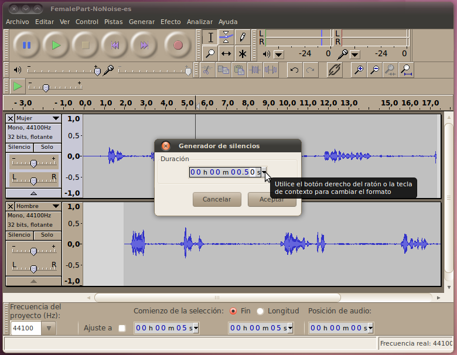
Escucha el sonido para ver si se oye mejor. Si necesitas más
espacio, vuelve al paso anterior y añade más. Repite esto para cada
sección que no esté bien alineada, avanzado de izquierda a derecha para
cada pista. (Si empezaras de derecha a izquierda, cada cambio que
hicieras sería descartado por los que ya hubieras hecho anteriormente.)
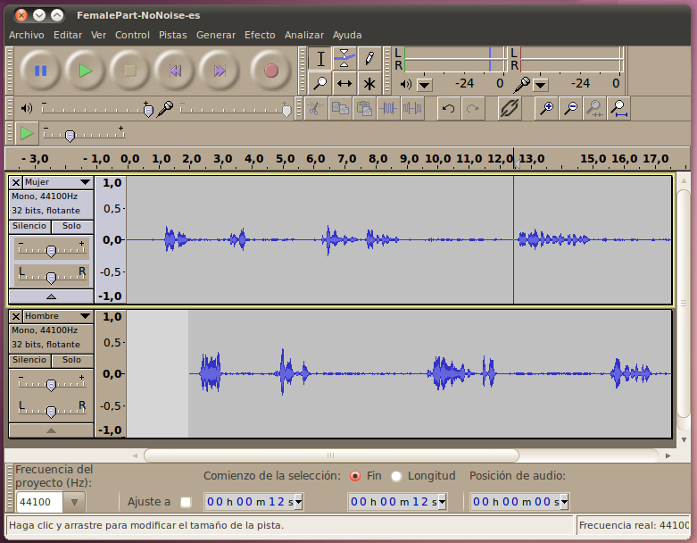C
Cómo Sincronizar con un Audio Marker
Otra
forma de sincronizar audio es haciéndo esto desde el principio. Esta
vez los dos personajes fueron grabados en la misma toma, usando
microonos distintos. Puedes descargar las dos pistas distintas aquí y aquí.
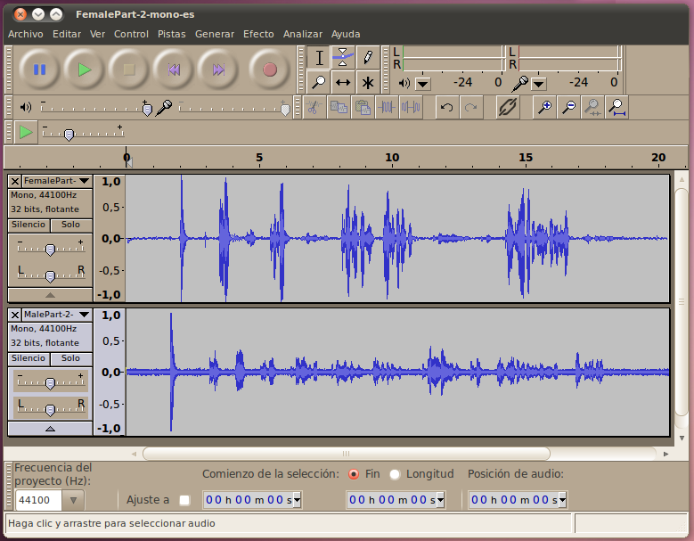
Cuando
reproduzcas este sonido, notarás que ambos tienen un sonido alto y
agudo al principio. esto suena como si se hubiera hecho
intencionalmente (se puede hacer con equipo profesional o simplemente
aplaudiendo una sola vez con tus manos) para que las dos pistas se
pudieran sincronizar empezando en este punto.
Es fácil de sincronizarlas ahora. Simplemente acércate a la parte
con el sonido agudo, y mueve las pistas usando la Herramienta de
Desplazamiento hasta que el sonido sea exactamente el mismo en cada
pista.
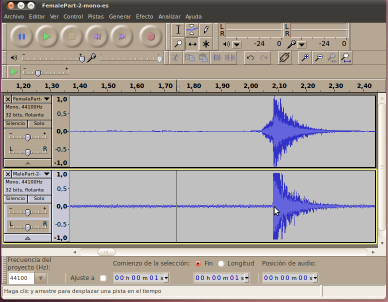
Ahora (o cunado hayas terminado con toda tu edición, si prefieres)
puedes cortar exactamente la misma cantidad de sonido de ambas
grabaciones (usa el editor de selección en la parte de abajo de la
pantalla, selecciona cero para el comienzo y la misma longitud para
ambas pistas). Esto te dará un punto de partida que ocurre justo
después del aplauso. El aplauso sólo estaba ahí para la sincronización,
y no lo deseamos en la grabación final. Para asegurarte de que
exactamente la misma cantidad de espacio se recorte de cada pista, usa
el editor de selección y usa el botón de Cortar (Ctrl+x).
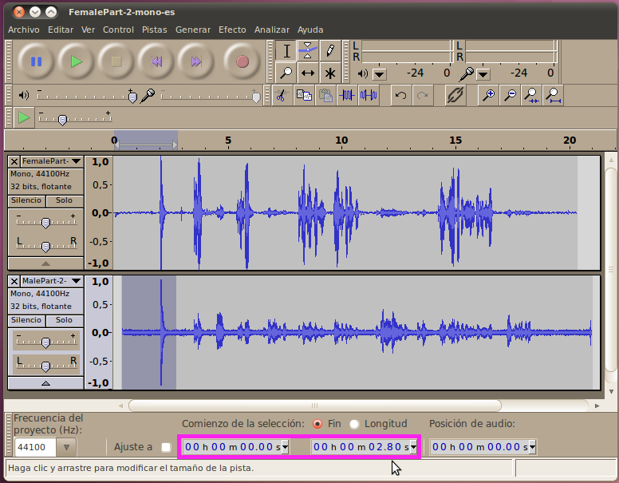
Demasiado Audio
Tal vez hayas notado que en algunos casos el
micrófono del hombre grabó un poco de la mujer hablando y el micrófono
de la mujer también capturó un poco de la voz del hombre mientras
hablaba. Esto es una ocurrencia muy común, pero queremos removerla,
porque si el mismo audio aparece aunque sea un microsegundo aparte,
puede cambiar la calidad del sonido final drásticamente (puede sonar
commo un eco o una reverberación). Las siguientes son áreas en nuestro
clip de audio donde esto ocurre:
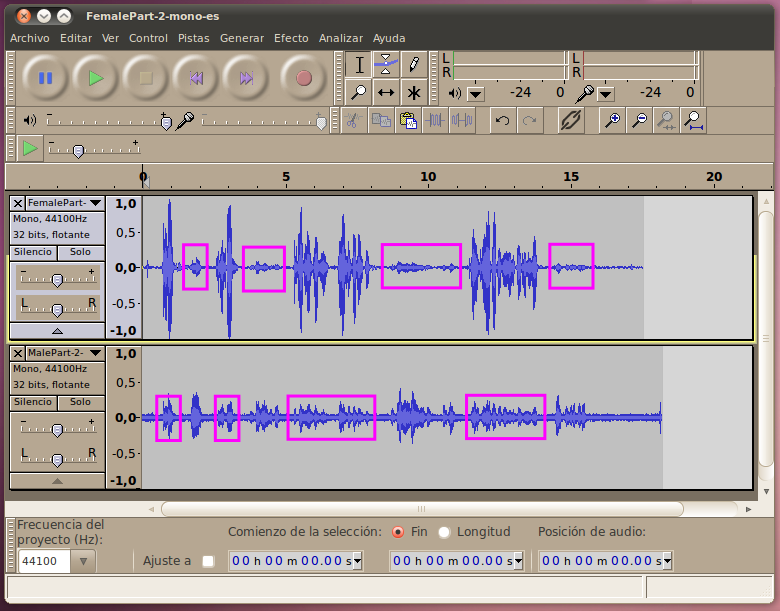
Una manera de resolver esto podría ser usando la función de
"Silenciar Audio" que usamos en la sección anterior. Su utilidad es
obvia aquí, ya que si fueramos simplemente a recortar el audio
adicional de nuestras pistas, la duración de las pistas cambiaría, y no
sería posible coordinar las dos voces. En cambio, con esta función
podemos seleccionar cada porción de audio y luego aplicar el "Silenciar
Audio".
Otra opción para resolver esto es la Herramienta de Envolvente.
Esta herramiente te permite crear un envolvente gráfico alrededor de la
forma de audio, el cual indica el volúmen para esa área. Esto te
permite simplemente bajar el volumen de una pista solamente para áreas
que no quieras escuchar, mientras las demás áreas se mantienen al
volumen normal.
Para aplicar esto, cambia tu modo a la Herramienta de Envolvente,
inmediatamente a la derecha de la Herramienta de Selección.
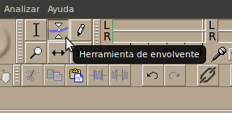
Esta herramienta funciona aplicando puntos de control al volumen a
diferentes puntos de tiempo. Cada vez que aplicas un punto de contror
haciendo clic en la gráfica de onda, la herramienta creará cuatro
puntos de tiempo. Cada vez que aplicas un punto de controlar haciendo
clic en la gráfica de onda, la herramienta creará cuatro puntos
flotantes que te permiten ajustar el volumen. Los cuatro puntos de
control ajustan los niveles a 100%, -100%, 50%, y -50% del volumen
original. Puedes arrastrar cualquier de estos puntos y moverlos hacia
arriba o hacia abajo para cambiar el nivel del volumen en ese punto. Si
mantienes el punto de 100% en la parte de arriba de la gráfica, o el
punto de 50% en la linea media, nada cambiará.
Lo primero que yo hago cuando uso la herramienta de envolvente es
establecer puntos de control (que no se van a mover) para las porciones
de audio que no quiero cambiar. Aquí están los puntos de control
"fijos", aplicados a la voz del hombre:
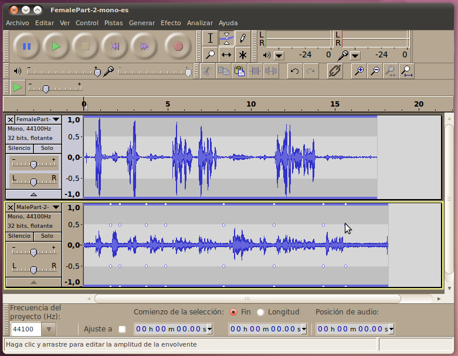
Una vez los puntos fijos son aplicados, es fácil arrastrar el
envolvente hasta cero entre medio de esos puntos. Sólo haz clic en esas
zonas para crear un nuevo punto de control, y arrástralo hacia el
centro de la gráfica. A medida que lo arrastras, verás que el
envolvente forma una curva desde tu nuevo punto de control hasta los
puntos de control de tu audio bueno, dándonos una transición fluida
hacia el silencio (esto sería aún más importante si no estuvieras
silenciando el audio completamente).
Aquí están los resultados luego de que la herramienta de envolvente
se ha aplicado para silenciar los sonidos innecesarios dentro de la
pista del hombre:
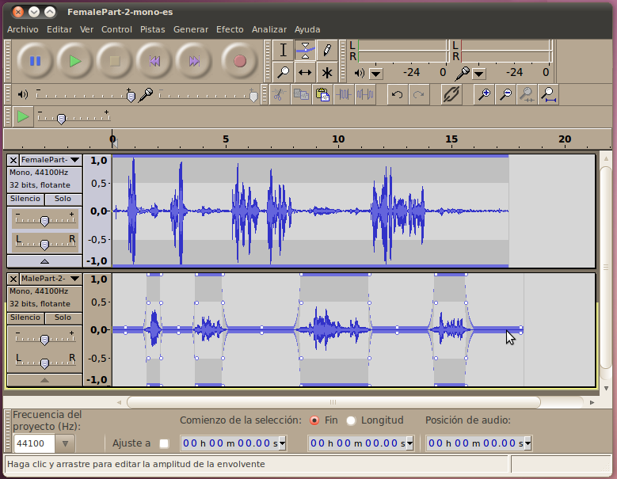
La herramienta de envolvente es aún más útil cunado quieres cambiar
los niveles de sonido constantemente para distintas pistas que se
relacionan unas con otras. Por ejemplo, si tuvieras una banda en la que
cada instrumento está en su propia pista, es fácil usar la herramienta
de envolvente para bajar el volumen del sonido de la precusión durante
una porción de la canción en la que quiere que el solista se escuche
más claramente.
Cómo crear una pista estéreo
Ahora que tenemos dos pistas de
buena calidad, una para cada hablante, podemos combinarlas para que
formen una pista estéreo que tenga a un hablante en cada uno de los dos
canales. Esto dará la impresión, al escucharse, de que una persona está
hablando desde la derecha, y la otra habla desde la izquierdad.
Audacity es inteligente en que cuando exporta el proyecto,
automáticamente crea un archivo estéreo. Todo lo que tenemos que hacer
es controlar cuánto volumen sale por cada canal de cada pista. En las
herramientas para la pista, que están a la izquierda de la gráfica de
onda, hay un deslizador con una L y una R (para "Left"/Izquierda y
"Right"/Derecha). Podemos mover el deslizador para la voz femenina
hacia la izquierda, y el deslizador para la voz masculina hacia la
derecha, de manera que suene como si la mujer estuviera hablando desde
la izquierda y el hombre desde el otro lado.
No es necesario mover el deslizador hasta el extremo; de hecho, es
mejor dejar que un poco de cada pista salga por el canal opuesto. Esto
es porque, en la vida real, el sonido que llega de una persona que te
está hablando desde la derecha (por ejemplo) va a entrar en su mayoría
por tu oído derecho, pero parte del sonido va a ir alrededor de tu
cabeza (y a rebotar en otras superficies) y entrará por tu oído
izquierdo. Si quien escuche este audio estuviera usando audífonos y
todo el audio entrara sólo por un lado, no sonaría como algo natural.
Aquí hay un ejemplo de los parámetros cambiados para los distintos
canales:
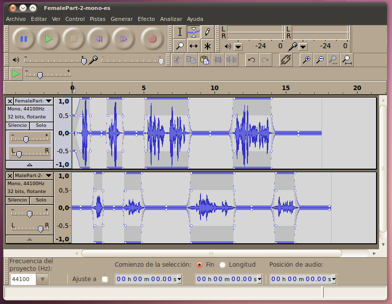
Otra sugerencia: Cuando el audio se grabó, el micrófono usado por
la mujer capturó un poco más de intensidad, y su canal suena un poco
más alto. Para que ambos canales estén más balanceados, usa el
deslizador de volumen (el que tiene los signos "-" y "+") y redúcelo un
poco en el canal de la mujer. El otro problema con el audio es que el
micrófono del hombre capturó mucho sonido de trasfondo, y necesitamso
removerlo... ¡pero eso lo haremos en la próxima sección!